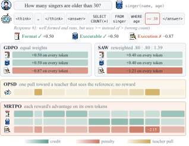
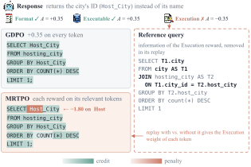
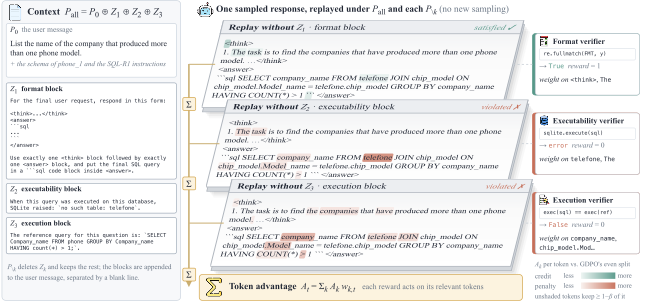
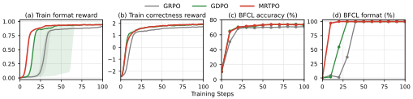
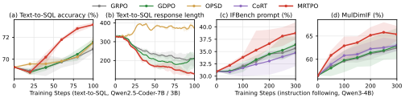
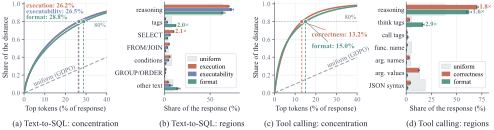
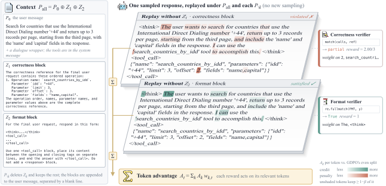
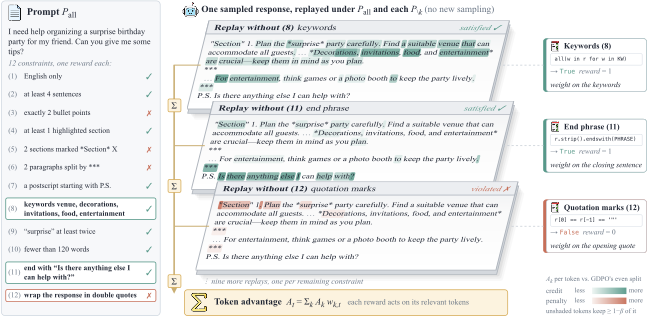

Reward-Specific Token-Level Credit Assignment for Multi-Reward RL
Language models are increasingly trained against several verifiable rewards at once: the correctness and the format of a tool call, or the individual constraints of a complex instruction. GDPO normalizes each reward separately, so different reward combinations keep distinct advantages. But in GRPO, GDPO and SAW, every token of a response shares one advantage.
A verifier checks only a few positions. The penalty for one wrong token is spread over the whole response, where it can be outweighed by the credit other rewards put on the same tokens.

>= for >.
GDPO and SAW put each reward's advantage on every token; OPSD pulls toward a teacher; MRTPO puts format credit on the tags,
executability credit on the query, and the execution penalty mostly on >= 30.
Host.MRTPO assigns the advantage of each reward to the tokens relevant to it, using the information its verifier checks.
\(Z_k\) is what reward \(k\) checks: the format rule, the response's own SQLite error, the reference query, or one constraint of the instruction. \(P_{\text{all}} = P_0 \oplus\) all blocks; \(P_{\setminus k}\) leaves out \(Z_k\). When the information is already in the prompt (instruction constraints), \(P_{\text{all}}\) is the prompt and \(P_{\setminus k}\) removes one constraint. Sampling still uses \(P_0\).
The sampling policy reads its own response once under each context, one forward pass per context, with no new generation. At every token \(t\), the Jensen–Shannon distance \(q_{k,t}\) between the two next-token distributions measures how relevant that token is to reward \(k\).
The distances become per-token weights, and each token's advantage is the weighted sum over rewards. The weights average to 1 per response, so every response keeps its GDPO credit; only the placement changes.

telefone, which does not exist. Each replay
removes one verifier block; the shading shows where that reward's advantage goes.| Method | What changes in the GDPO step | Token advantage \(S_t^{(j)}\) |
|---|---|---|
| GDPO | nothing; the per-reward advantages are summed | \(\sum_k A_k^{(j)}\)for all \(t\) |
| SAW | each reward is weighted by its coefficient of variation in the batch | \(\sum_k \lambda_k A_k^{(j)}\)for all \(t\) |
| DARA | rewards that vary in fewer groups get a larger, capped weight on their positive advantages | \(\sum_k \bigl(A_k^{(j)} + (\lambda_k - 1)[A_k^{(j)}]_+\bigr)\)for all \(t\) |
| DVAO | each reward is weighted by its standard deviation within the group, normalized across rewards | \(\sum_k \lambda_k A_k^{(j)}\)for all \(t\) |
| SA-MRPO | each reward is discounted by how saturated it is in the batch | \(\sum_k \lambda_k A_k^{(j)}\)for all \(t\) |
| GD²PO | responses whose per-reward advantages disagree in sign are dropped, and each prompt is scaled by its share of kept responses | \(\kappa\,\delta^{(j)} \sum_k A_k^{(j)}\)for all \(t\) |
| RVPO | the rewards are combined by a soft minimum, which penalizes their variance | \(\operatorname{softmin}_k A_k^{(j)}\)for all \(t\) |
| MRTPO | each reward's advantage is assigned to tokens by relevance | \(\sum_k A_k^{(j)}\, w_{k,t}\) |
The other methods act on the response, so every token of a response gets the same advantage. MRTPO sets a weight per reward and token and can be combined with them.
| Method | Spider | BIRD | Avg. | ||||
|---|---|---|---|---|---|---|---|
| Dev | Test | Syn | Realistic | DK | Dev | ||
| Qwen2.5-Coder-3B-Instruct | |||||||
| Base | 62.38 | 64.46 | 53.00 | 54.72 | 51.87 | 36.88 | 53.88 |
| GRPO | 74.24±1.26 | 75.00±0.31 | 65.92±1.50 | 69.49±1.94 | 64.04±1.69 | 43.54±1.03 | 65.37±1.18 |
| GDPO | 76.66±2.21 | 76.40±1.17 | 67.34±1.82 | 70.80±1.94 | 65.61±0.93 | 47.13±1.94 | 67.32±1.66 |
| OPSD | 68.18±0.61 | 69.34±0.45 | 59.15±0.39 | 62.14±1.38 | 56.12±0.96 | 39.21±0.70 | 59.02±0.49 |
| MRTPO | 78.24±0.44 | 76.79±0.43 | 68.67±0.86 | 73.49±0.61 | 68.17±1.53 | 46.26±0.87 | 68.60±0.15 |
| GDPO+SAW | 74.63±0.06 | 74.77±0.86 | 65.60±1.03 | 70.60±2.08 | 64.67±0.58 | 45.23±1.28 | 65.92±0.93 |
| MRTPO+SAW | 78.88±0.44 | 77.67±0.23 | 68.86±0.54 | 73.49±0.57 | 67.92±0.66 | 46.95±0.93 | 68.96±0.19 |
| Qwen2.5-Coder-7B-Instruct | |||||||
| Base | 77.18 | 77.55 | 68.67 | 73.62 | 67.04 | 51.63 | 69.28 |
| GRPO | 78.30±0.78 | 81.03±0.49 | 71.44±0.44 | 73.89±0.79 | 66.91±0.66 | 54.00±0.63 | 70.93±0.32 |
| GDPO | 79.21±0.68 | 80.62±0.49 | 72.21±0.73 | 74.87±0.82 | 67.29±0.54 | 55.11±1.26 | 71.55±0.27 |
| OPSD | 79.11±0.44 | 80.39±0.52 | 70.76±1.45 | 75.72±0.97 | 69.10±0.49 | 53.87±0.36 | 71.49±0.54 |
| MRTPO | 81.33±0.42 | 81.65±0.45 | 73.53±0.48 | 75.92±1.78 | 70.04±1.79 | 56.42±0.46 | 73.15±0.19 |
| GDPO+SAW | 79.92±0.46 | 81.32±0.47 | 72.24±0.98 | 76.31±0.12 | 68.23±1.56 | 55.44±1.18 | 72.24±0.35 |
| MRTPO+SAW | 81.08±0.31 | 81.39±0.15 | 73.21±1.12 | 77.23±0.99 | 70.04±0.19 | 57.53±0.32 | 73.41±0.35 |
Execution accuracy (%), mean ± standard deviation over 3 seeds.
| Method | IFEval | IFBench | MulDimIF | AdvancedIF | Avg. | |||
|---|---|---|---|---|---|---|---|---|
| Prompt | Inst. | Prompt | Inst. | Acc. | Overall | Rubric | ||
| Qwen3-4B-Instruct-2507 | ||||||||
| Instruct | 83.77 | 88.82 | 30.95 | 33.13 | 56.50 | 38.21 | 76.41 | 58.26 |
| GRPO | 85.44±0.15 | 90.16±0.06 | 35.68±1.02 | 37.79±1.01 | 62.44±0.86 | 39.27±0.27 | 77.06±0.12 | 61.12±0.34 |
| CoRT | 85.37±0.50 | 90.06±0.31 | 34.74±1.90 | 36.85±1.95 | 63.00±1.35 | 38.88±0.39 | 76.95±0.44 | 60.84±0.78 |
| GDPO | 85.52±0.52 | 90.23±0.33 | 36.39±1.59 | 38.84±1.18 | 62.88±2.83 | 38.91±0.43 | 76.85±0.21 | 61.37±0.77 |
| MRTPO | 85.66±1.20 | 90.40±0.74 | 38.76±1.53 | 40.92±1.33 | 65.37±1.33 | 39.39±0.61 | 77.25±0.15 | 62.54±0.32 |
| Qwen2.5-7B-Instruct | ||||||||
| Instruct | 72.09 | 79.50 | 26.53 | 29.37 | 50.77 | 23.51 | 69.26 | 50.15 |
| GRPO | 81.72±0.31 | 87.42±0.16 | 35.94±2.06 | 38.43±2.05 | 55.19±0.77 | 25.98±0.56 | 71.08±0.24 | 56.54±0.62 |
| CoRT | 81.32±0.56 | 87.11±0.40 | 35.68±1.57 | 38.22±1.73 | 55.05±0.30 | 26.07±0.76 | 71.11±0.37 | 56.36±0.55 |
| GDPO | 81.91±1.30 | 87.58±0.94 | 35.70±2.63 | 38.57±3.25 | 55.33±1.58 | 26.13±0.90 | 71.46±0.25 | 56.67±0.77 |
| MRTPO | 81.98±0.78 | 87.57±0.60 | 38.87±1.96 | 42.00±2.60 | 53.50±1.72 | 26.18±0.52 | 71.44±0.33 | 57.36±0.63 |
Accuracy (%), mean ± standard deviation over seeds. The largest gains are on IFBench, whose constraints are not seen in training.
| Method | Qwen2.5-1.5B | Qwen2.5-3B | ||
|---|---|---|---|---|
| Non-Live | Live | Non-Live | Live | |
| Base | 12.06 | 9.33 | 36.23 | 47.67 |
| GRPO | 78.04±0.84 | 64.80±0.55 | 81.81±0.76 | 69.31±0.11 |
| GDPO | 79.30±1.69 | 67.05±2.40 | 82.42±0.50 | 68.86±0.41 |
| MRTPO | 80.05±1.00 | 68.66±0.92 | 82.55±1.17 | 69.58±0.66 |
BFCL-v4 single-turn AST accuracy (%), Non-Live and Live overall, mean ± standard deviation over seeds.


Each reward's distance concentrates on a small part of the response. In text-to-SQL, 80% of a reward's distance falls on 26–29% of the tokens; in tool calling, on 13–15%. In instruction following, an end-phrase constraint puts 40% of its distance on 4% of the tokens: the phrase itself.



MRTPO needs two things from a task:
A vector of rewards, each scored by its own verifier, as in GDPO.
For every reward, a text block that carries the information its verifier uses. The two replay contexts differ only in this block, so the block decides which tokens receive the reward's advantage.
For each reward \(k\) the replay compares \(P_{\text{all}}\), which contains the blocks of all rewards, with \(P_{\setminus k}\), the same context with block \(k\) removed.
Tool calling, text-to-SQL. The verifier holds information the policy never sees while sampling: the reference calls, the reference query, the response's own SQLite error. Write each piece as a block and append the blocks to the rollout prompt \(P_0\): \(P_{\text{all}} = P_0\) + all blocks, \(P_{\setminus k} = P_0\) + all blocks except block \(k\). The rollout itself still uses \(P_0\).
Instruction following. Every constraint the verifiers check is part of the instruction, so the rollout prompt is already \(P_{\text{all}}\). Nothing is added; \(P_{\setminus k}\) is the rollout prompt with constraint \(k\) deleted.
MRTPO helps when a reward's information, written as text, changes what the policy would write at the positions its verifier reads: a tool name and its arguments, a table or column, a required phrase. In math reasoning, the answer block points only at the last number, and a length limit is not decided by particular tokens. We did not evaluate MRTPO on math answer and length rewards or on GDPO's coding rewards.
β = 0.5 works in all our settings and is a good default; some tasks may prefer a smaller β. The reallocation bound keeps
long training runs stable, so we use it in all settings. For short training, MRTPO without the bound also works well
(--no-reallocation-bound).
replay_viz/ replays responses of the base
model under your blocks and draws each reward's token weights. If you are unsure whether a block works, look at a few
responses there first. Full guide: the README on GitHub.@article{zhai2026mrtpo,
title={Each Reward to Its Relevant Tokens: Reward-Specific Token-Level
Credit Assignment for Multi-Reward RL},
author={Zhai, Skylar and Wang, Haonan and Liu, Zhining and Song, Linxin and
Ding, Xuwei and Liang, Jingcheng and Kang, Jian},
year={2026}
}